DV-GQ-001 · Cancelar o desvio pela tela Relatório de Desvios não deixa registro no histórico
Cancelar um desvio pela tela Relatório de Desvios pede confirmação e justificativa (obrigatória), mas o cancelamento e a justificativa não entram no histórico do desvio. O histórico mostra só "INCLUSÃO DO REGISTRO". Reconfirmado em 21/10 e 22/10/2026. O cancelamento feito pela tela Registro Ação Corretiva Imediata entra no histórico; o desta tela não.
Como reproduzir o erro, passo a passo
- Abrir Controle de Desvios › Relatório de Desvios e cancelar um desvio, informando a justificativa.
- Abrir o histórico do mesmo desvio.
Esperado
Cancelado, com o cancelamento e a justificativa no histórico (quem, quando e por quê). Pelo plano de testes, o caso era registrar se o cancelamento não aparecesse.
Obtido
O histórico mostra só "INCLUSÃO DO REGISTRO"; o cancelamento e a justificativa não aparecem.
Evidência (captura da tela)
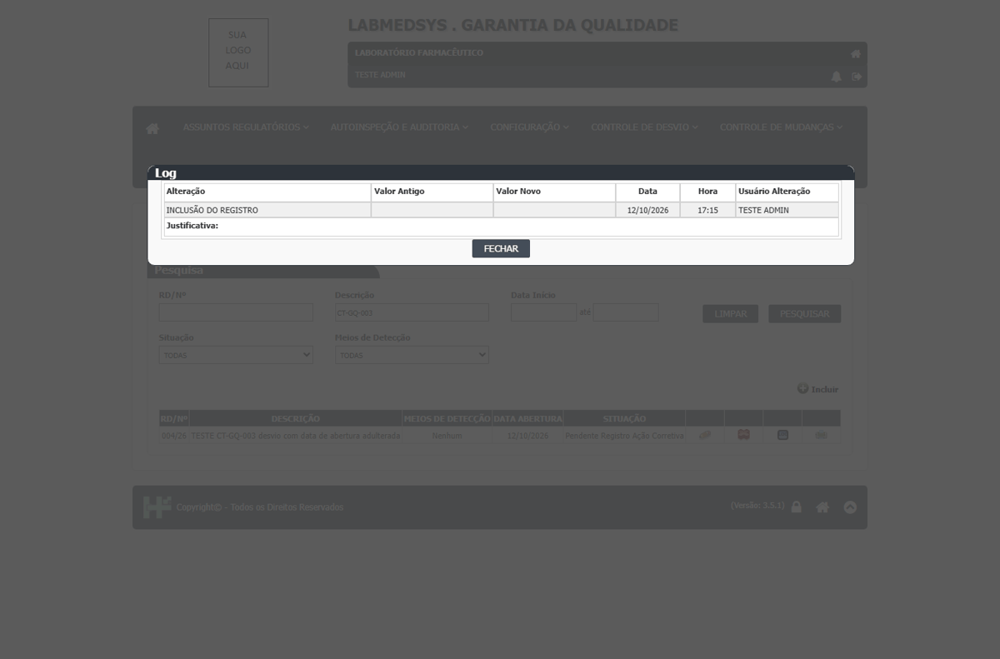
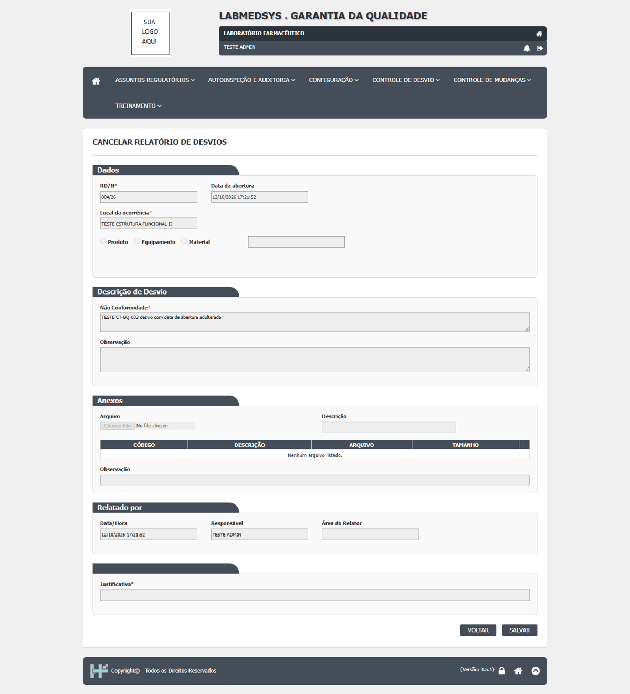
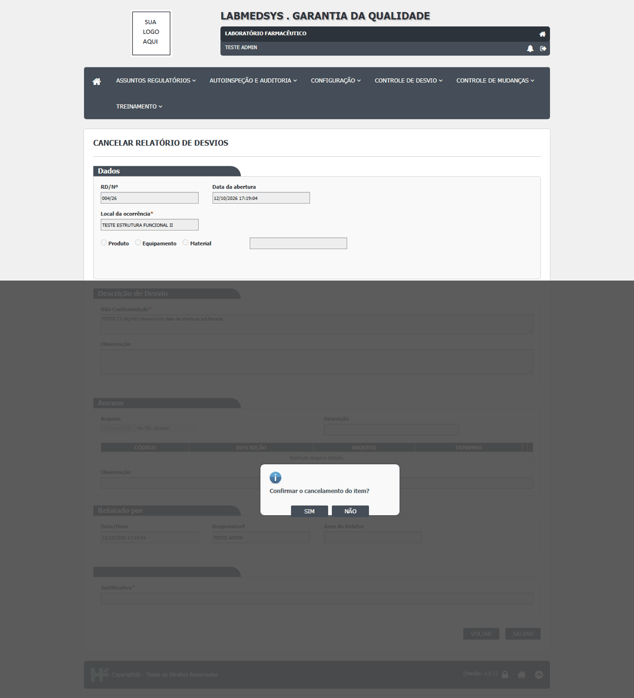
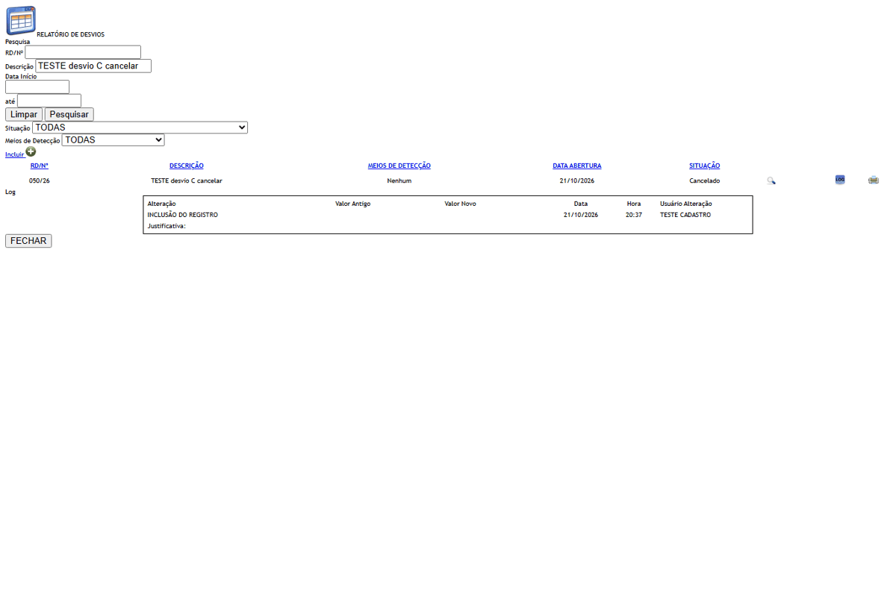
DV-GQ-017 · Um apóstrofo na descrição do desvio esvazia a lista e trava a paginação
Um apóstrofo na descrição do desvio esvazia a lista e trava a paginação. A grade da tela Relatório de Desvios fica vazia, sem mensagem, e a paginação trava para todos os desvios; a lista da tela Registro Ação Corretiva Imediata também.
Como reproduzir o erro, passo a passo
- Registrar desvio com apóstrofo na descrição.
- Abrir a lista.
Esperado
A lista mostra o desvio.
Obtido
A grade da tela Relatório de Desvios fica vazia, sem mensagem, e a paginação trava para todos os desvios; a lista da tela Registro Ação Corretiva Imediata também. O desvio foi reparado no teste (desvio M04).
Evidência (captura da tela)
DV-GQ-039 · A data e hora do relato do desvio vêm do navegador e são gravadas sem conferência
A data e hora do relato do desvio vêm do navegador e são gravadas sem conferência. O que a tela mostra: Grava a data enviada; a lista mostra 01/01/2020 (RN-GQ-015, SEG-GQ-09).
Como reproduzir o erro, passo a passo
- Alterar, pelas ferramentas do navegador, o campo Data/Hora do quadro Relatado por para 01/01/2020 e salvar.
Esperado
Data e hora do servidor.
Obtido
Grava a data enviada; a lista mostra 01/01/2020 (RN-GQ-015, SEG-GQ-09).
Evidência (captura da tela)
DV-GQ-062 · Escolher Material ou Produto no tipo de item esconde o botão Salvar em 4 telas do Controle de Desvios
Ao escolher Material ou Produto no tipo de item, o botão Salvar some e só resta Voltar. Acontece em Relatório de Desvios (Incluir), Registro Ação Corretiva Imediata, Pré Avaliação Relatório Desvios e Avaliação Área; não acontece em Relatório de CAPA nem nas telas de plano. Em Pré Avaliação e Avaliação Área o Salvar não volta nem depois de voltar a Equipamento. Somado ao DV-GQ-010 (a busca de Produto e Material não devolve itens), não há como gravar um desvio de produto ou material pela tela, que é o caso central das BPF. Gravidade subida de Baixa para Alta no repasse de 06/11/2026 (RDC 658/2022, rastreabilidade do lote).
Como reproduzir o erro, passo a passo
- Abrir Controle de Desvios › Relatório de Desvios › Incluir (ou Editar na Avaliação Área e na Pré Avaliação).
- Clicar em Equipamento e escolher um item: o Salvar aparece.
- Clicar em Material ou Produto: o Salvar some.
- Voltar a Equipamento: nas telas Relatório de Desvios e Registro Ação Corretiva Imediata o Salvar volta; na Pré Avaliação e na Avaliação Área não volta.
Esperado
O Salvar continua visível, e é possível gravar o desvio com item do tipo Produto, Equipamento ou Material.
Obtido
O Salvar some ao escolher Material ou Produto, em 4 telas; em 2 delas não volta.
Evidência (captura da tela)
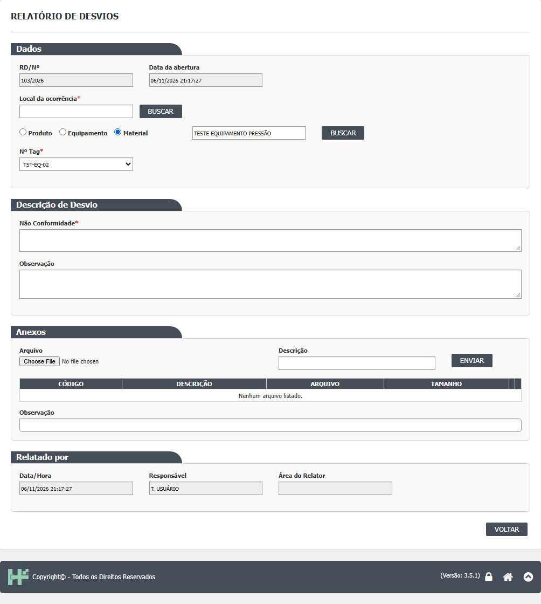
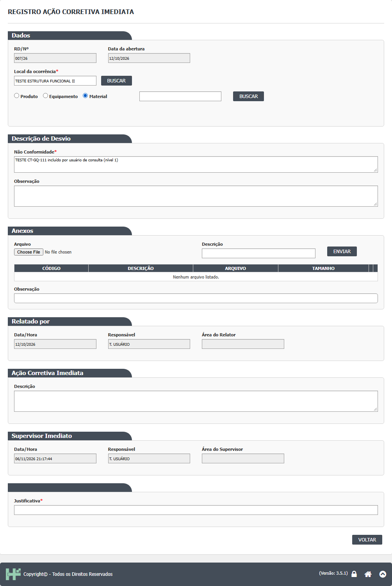
DV-GQ-329 · Desvio aberto não avisa nem bloqueia a movimentação do lote no Estoque
Com o desvio **091/26** aberto (Pendente Registro Ação Corretiva), que cita o lote `TESTEKIT90` (item `TESTER805`) no texto, o Estoque transferiu 1 unidade do lote de `L903-R001-C001-A905` para `L903-R001-C003-A001` com "Confirma a inclusão do item?" e "Inclusão realizada com sucesso!", sem aviso e sem bloqueio. O desvio não consegue apontar o lote (a busca de Produto responde "A pesquisa não retornou nenhum resultado." e a de Material, "Ocorreu um erro interno não esperado.": DV-GQ-010), e o Estoque nunca consulta o desvio. O lote de um desvio em investigação segue disponível, sem que ninguém seja avisado.
Como reproduzir o erro, passo a passo
- Abrir Controle de Desvios › Registro de RNC › Incluir, sem item (a busca não devolve nada), com o lote citado no texto, e salvar (desvio 091/26).
- Abrir Estoque › Movimentação de Material › Incluir, item TESTER805, item de entrada TA0011/26, origem L903-R001-C001-A905, destino L903-R001-C003-A001, 1 un., ADICIONAR ITEM e SALVAR REGISTRO com justificativa.
Esperado
O lote ligado a um desvio aberto é bloqueado ou a pessoa é avisada antes de movimentá-lo.
Obtido
"Inclusão realizada com sucesso!", sem aviso.
Evidência (captura da tela)
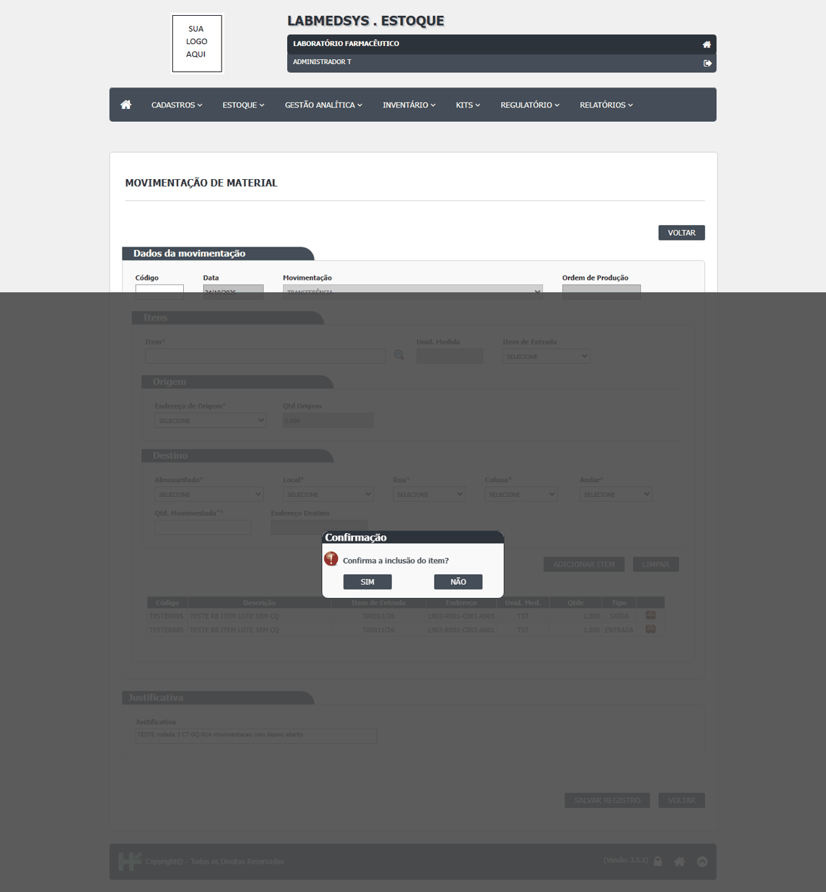
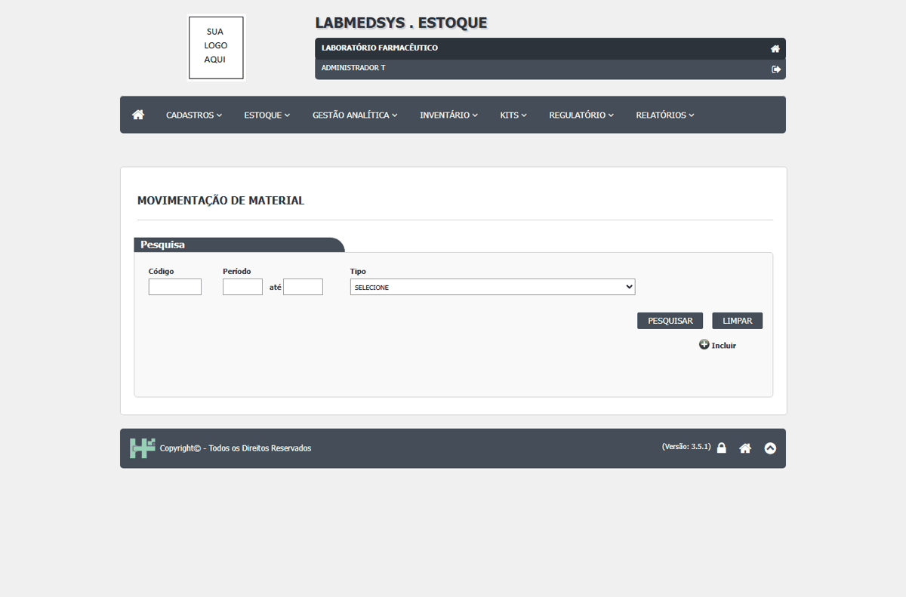
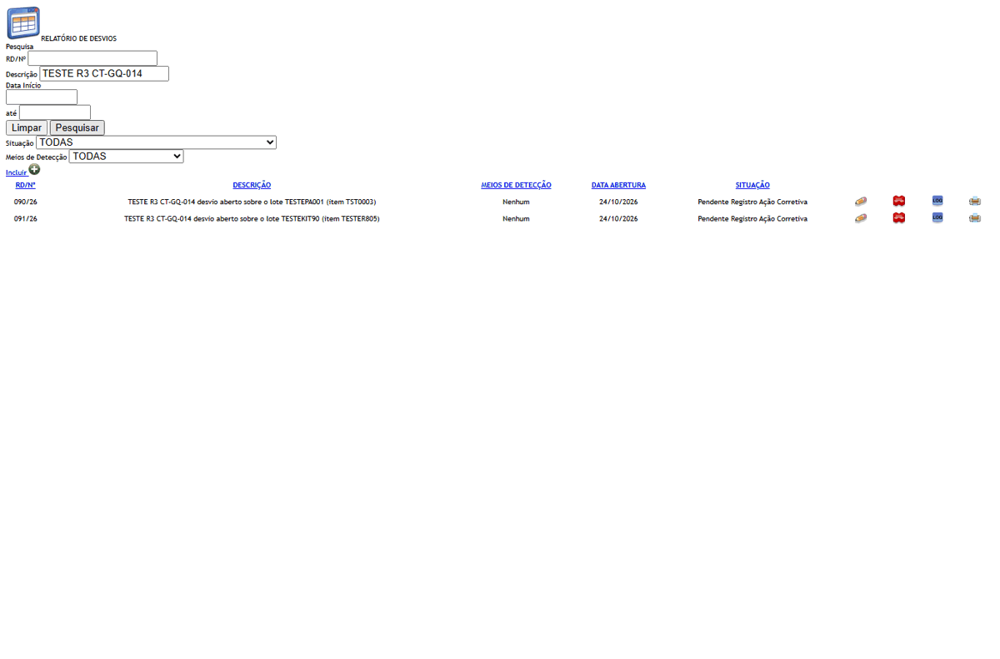
DV-GQ-333 · A mesma pessoa abre o desvio, registra a ação, pré-avalia e avalia com CAPA, sem nenhum aviso
Com um único usuário de Nível 3, o desvio 102/26 foi incluído, teve a ação imediata registrada, foi pré-avaliado e avaliado com abertura de CAPA. Nenhuma etapa avisou ou exigiu outra pessoa. Para o plano preventivo a mesma falha já está em DV-GQ-023.
Como reproduzir o erro, passo a passo
- Com um só usuário de Nível 3, incluir um desvio.
- Registrar a ação corretiva imediata, pré-avaliar e avaliar com CAPA, com o mesmo usuário.
Esperado
O sistema exige outra pessoa em etapas de avaliação, ou ao menos avisa.
Obtido
As quatro etapas passaram sem aviso; o desvio foi a Pendente Relatório de CAPA.
Sem captura de tela registrada para este defeito.
DV-GQ-008 · Usuário que só consulta consegue incluir um desvio
Um usuário de nível 1 (consulta) abre a tela Incluir do Relatório de Desvios e grava um desvio ("Inclusão efetuada com sucesso"). Falta conferir as ações do perfil dele nessa tela no Principal (por isso a gravidade era "Média, a confirmar"). Em 21/10/2026 o botão Incluir apareceu e funcionou também para o nível 1 (CT-GQ-N01-033).
Como reproduzir o erro, passo a passo
- Entrar com o usuário de consulta (nível 1) e abrir o Relatório de Desvios.
- Clicar em Incluir e gravar um desvio.
Esperado
Sem botões de incluir e alterar para quem só consulta (a norma pede acesso conforme a função).
Obtido
O desvio foi gravado ("Inclusão efetuada com sucesso"). O desvio ficou "Pendente Registro Ação Corretiva".
Evidência (captura da tela)
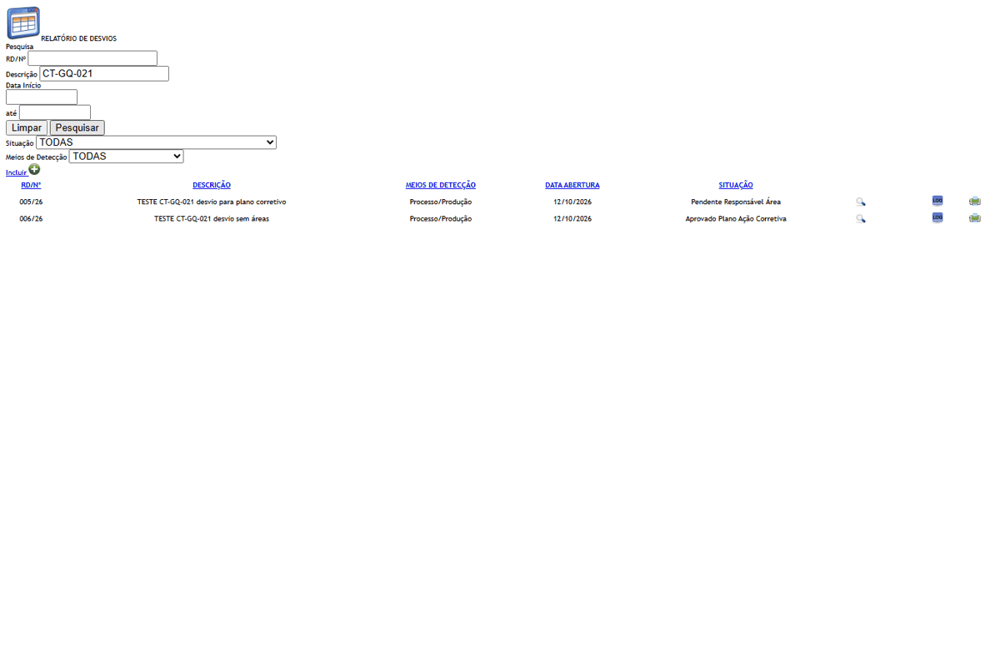
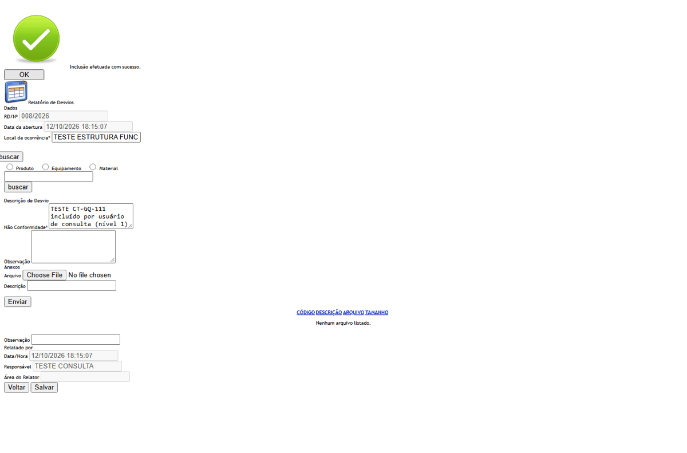
DV-GQ-010 · Produto e material não aparecem na busca do desvio: o desvio salva sem item e sem lote
A busca de Produto e de Material no desvio não devolve nada (a de Produto abre a janela vazia, sem mensagem; a de Material mostra "Ocorreu um erro interno não esperado."); só a de Equipamento devolve itens. Não há como ligar o desvio a um lote: ele salva sem produto, material e lote. Por isso o efeito do desvio no lote (CQ, Estoque, Produção) não pôde ser testado. Reconfirmado em 21/10 e 22/10/2026. Repasse de 06/11/2026: o mesmo erro aparece também no Registro Ação Corretiva Imediata e na Pré Avaliação ("Ocorreu um erro interno não esperado." na busca de Material e Produto); na Avaliação Área a busca não mostra nada. Com Equipamento a busca funciona.
Como reproduzir o erro, passo a passo
- Abrir Controle de Desvios › Relatório de Desvios › Incluir.
- No item, escolher Produto (ou Material), digitar pelo menos 3 letras e clicar em buscar.
- Salvar o desvio sem item.
Esperado
A busca devolve produtos e materiais, permitindo ligar o lote ao desvio.
Obtido
Produto: janela vazia sem mensagem. Material: "Ocorreu um erro interno não esperado." Só o equipamento aparece. O desvio salva sem item e sem lote.
Evidência (captura da tela)
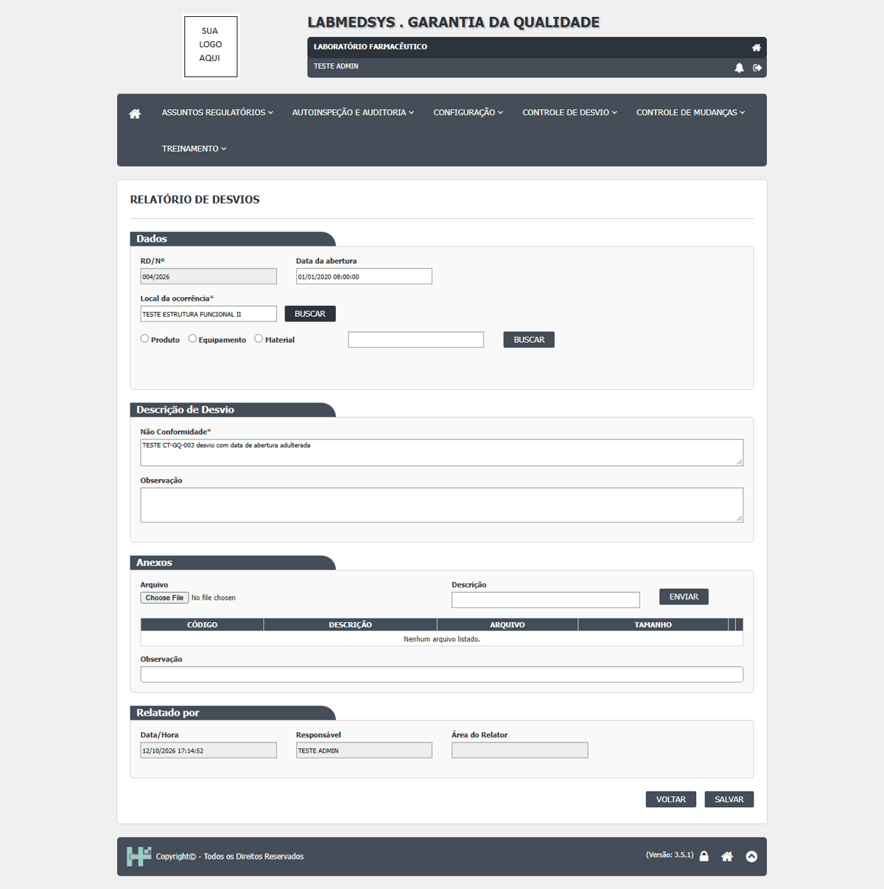
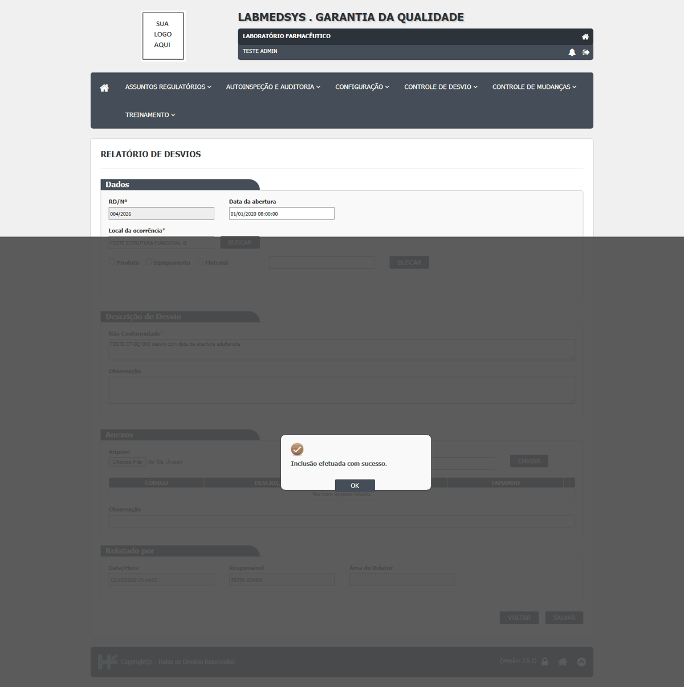
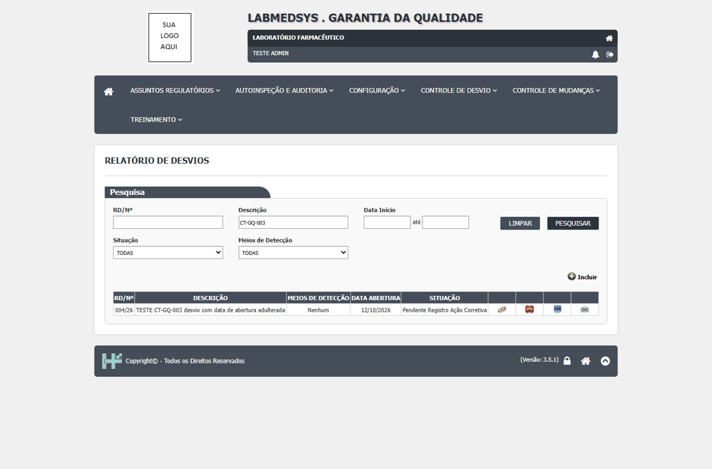
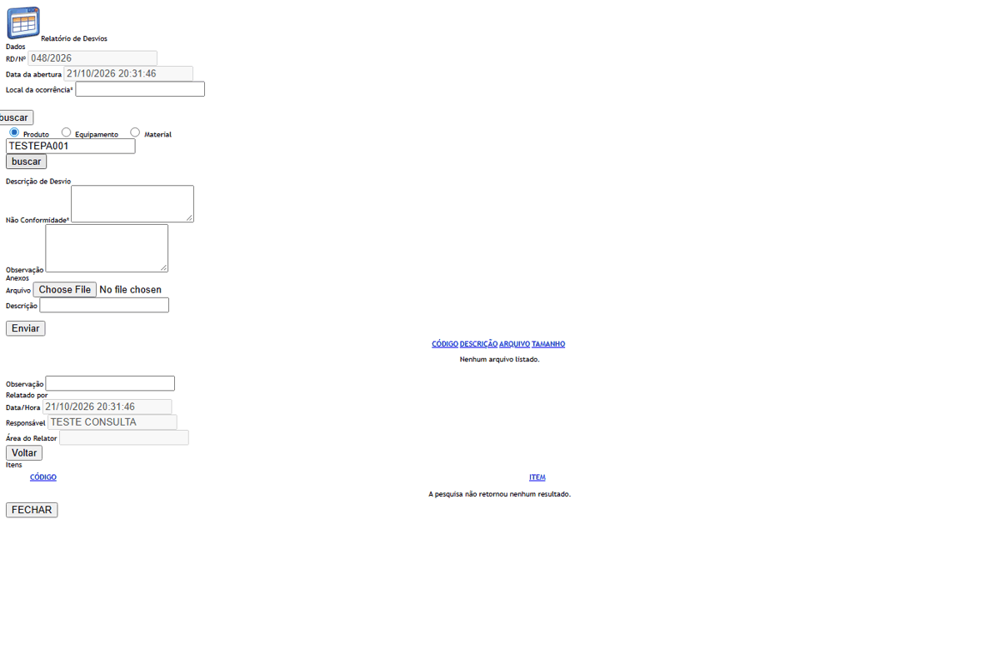
DV-GQ-018 · Imprimir o relatório do desvio (e o CAPA) abre uma página de erro
Imprimir o relatório do desvio (tela Relatório de Desvios), a lista da tela Registro Ação Corretiva Imediata e o CAPA (e, nas rodadas seguintes, as telas Pré Avaliação, Avaliação Área e Avaliação Relatório Desvios) abre uma página de erro no lugar do documento, em todos os RDs testados. Os relatórios das telas Acompanhamento RD e Controle de Emissão de RNC imprimem normalmente. A confirmar se o problema é do ambiente de teste. Por causa dele, os casos que pedem comparar o relatório impresso ficaram bloqueados.
Como reproduzir o erro, passo a passo
- Imprimir o RD (tela 1), a lista da tela 2 ou o CAPA (tela 6).
Esperado
Documento impresso.
Obtido
Página de erro no lugar do documento impresso, em todos os RDs testados (telas 1 a 6).
Evidência (captura da tela)
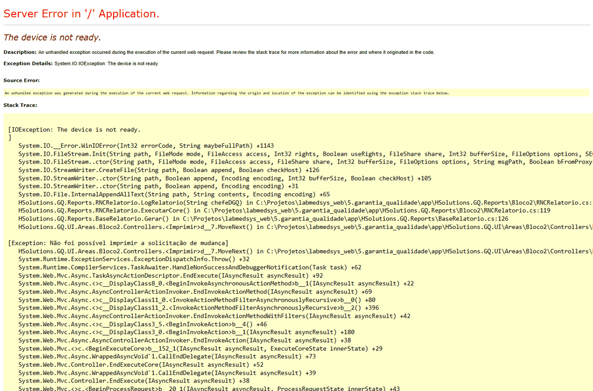
DV-GQ-051 · Descrição do desvio só com espaço é aceita
Descrição só com espaço é aceita e o desvio é gravado com a descrição em branco.
Como reproduzir o erro, passo a passo
- Tela Incluir, escolher local pela janela, digitar um espaço em Não Conformidade, Salvar.
Esperado
"Descrição é obrigatória."
Obtido
"Inclusão efetuada com sucesso." (074/26, descrição em branco na lista).
Evidência (captura da tela)
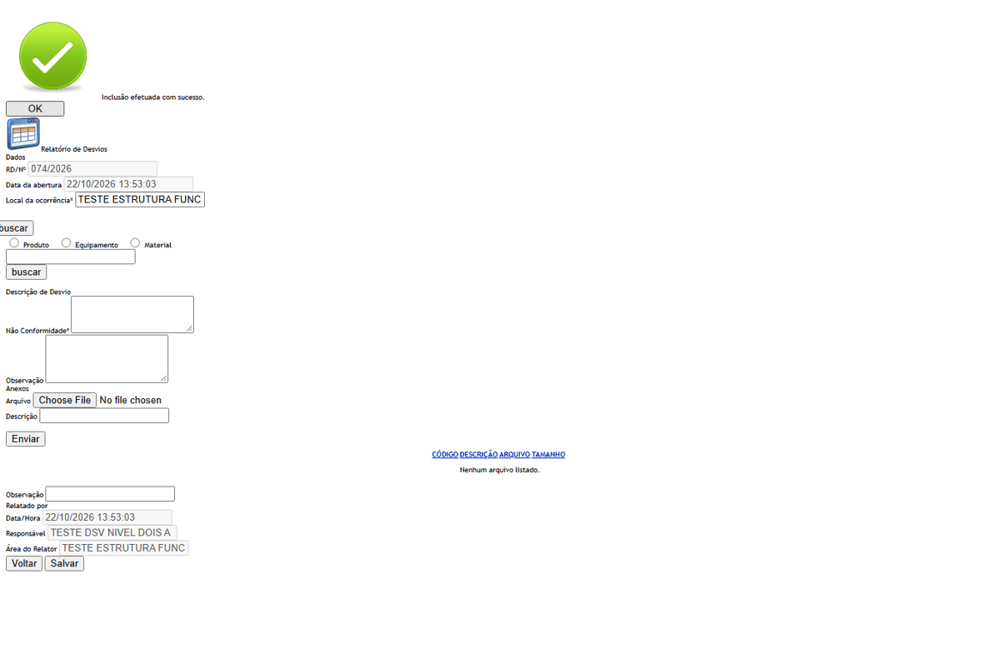
DV-GQ-052 · Editar e Visualizar o desvio mostram a data e hora de agora como "Data da abertura"
Editar e Visualizar mostram a data e hora de agora como "Data da abertura"
Como reproduzir o erro, passo a passo
- Abrir Editar ou Visualizar de um desvio de outro dia (015/26, 016/26, abertos em 21/10/2026).
Esperado
Data da abertura de 21/10/2026, igual à lista.
Obtido
22/10/2026 com a hora do momento da abertura da tela.
Sem captura de tela registrada para este defeito.
DV-GQ-053 · Mudar só a justificativa da edição grava "com sucesso" sem registro no histórico
Mudar só a justificativa da edição grava "com sucesso" sem registro no histórico.
Como reproduzir o erro, passo a passo
- Editar do 075/26, mudar só o texto da justificativa, Salvar, abrir o histórico.
Esperado
Nova linha com a justificativa.
Obtido
"Alteração efetuada com sucesso." e histórico igual ao de antes (3 linhas).
Evidência (captura da tela)
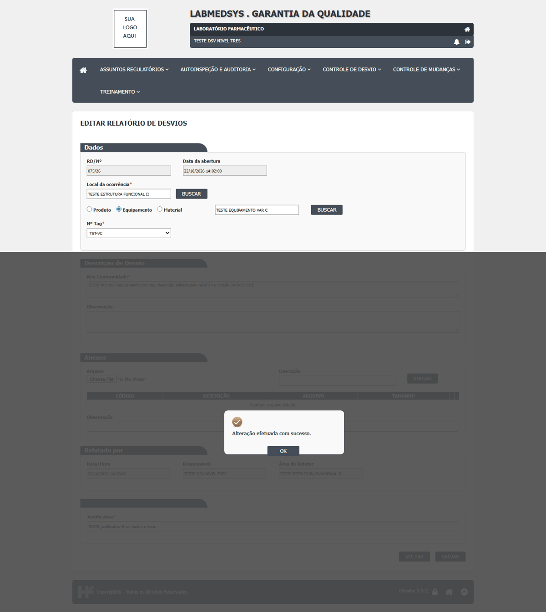
DV-GQ-054 · Quem registra a ação imediata passa a constar como "Relatado por"
Quem registra a ação imediata passa a constar como "Relatado por" na tela 1; a tela 2 ainda mostra o autor original.
Como reproduzir o erro, passo a passo
- Com um usuário de alçada maior (o que registra a ação), registrar a ação imediata em um desvio criado por outro usuário (no teste, o 078/26).
- Abrir a lupa do desvio na tela Registro Ação Corretiva Imediata e na tela Relatório de Desvios.
Esperado
O autor do relato não muda.
Obtido
A tela Registro Ação Corretiva Imediata mostra o autor original; a tela Relatório de Desvios mostra quem registrou a ação. O histórico registra "Responsável" do autor original para quem registrou a ação.
Sem captura de tela registrada para este defeito.
DV-GQ-033 · Ao salvar com vários campos faltando, a tela mostra só uma mensagem
Ao salvar com vários campos faltando, a tela mostra só uma mensagem. O que a tela mostra: Só a última mensagem aparece (por exemplo, só a divisão no CAPA; só o local na tela 1).
Como reproduzir o erro, passo a passo
- Salvar com vários campos faltando.
Esperado
Todas as mensagens.
Obtido
Só a última mensagem aparece (por exemplo, só a divisão no CAPA; só o local na tela 1).
Evidência (captura da tela)
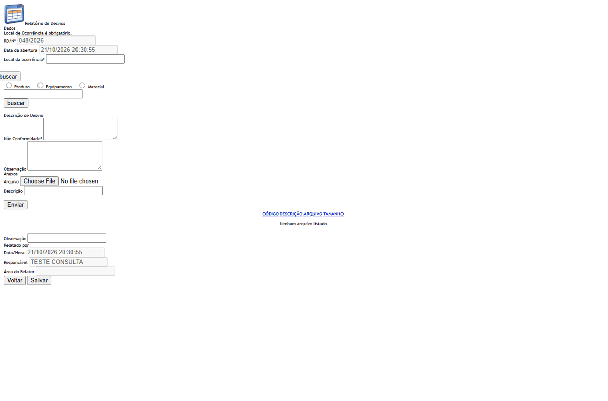
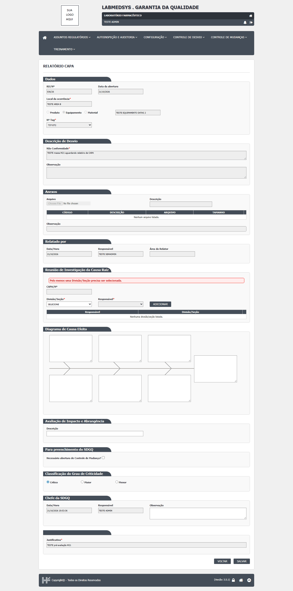
DV-GQ-056 · A tela Visualizar do desvio não mostra o Nº Tag do equipamento
A tela Visualizar não mostra o Nº Tag do equipamento.
Como reproduzir o erro, passo a passo
- Incluir desvio com equipamento (a TAG aparece e grava), abrir Visualizar.
Esperado
TAG visível.
Obtido
A tela Visualizar não tem o campo.
Sem captura de tela registrada para este defeito.